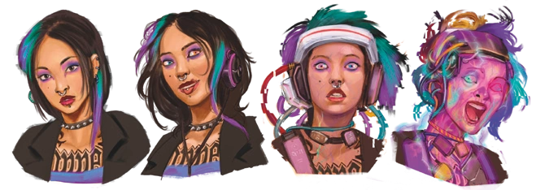

A Energia é a entidade do caos. Tudo que não pode ser explicado, o intangível, a anarquia. A constante mudança, o calor e o frio, a luz e as trevas. Tudo que envolve a imprevisibilidade e a transformação agrada a entidade de Energia.
A transformação da Energia sobrecarrega os efeitos da Morte. -Diário de Deus
A Energia foi o quarto elemento a ser apresentado, através dos Existidos de Energia e a Produção na Sala do Anfitrião em Ordem Paranormal: Desconjuração. No entanto, essa entidade só veio a receber maior destaque em Ordem Paranormal: Calamidade, com os efeitos causados pelo Anfitrião nas Ruínas de Ordo Calamitas.
A Entidade de Energia se comporta diferente das outras, parecendo nunca seguir um padrão lógico específico. Suas motivações parecem estar conectadas apenas com o seu próprio entretenimento, causando dor e agonia aos outros. A Energia representa todo o caos, a constante mudança e a imprevisibilidade.
Afinidade com o Elemento
Possuir uma afinidade ao elemento de Energia significa ser escolhido por sua Entidade. Dentre as várias consequências disso, é possível citar: olhos multicoloridos e luminecentes, sangue se misturando com o fogo da Energia, tiques incontroláveis, tremedeira, crises de ansiedade, hiperatividade, queimaduras, cabelos e pele com cores vibrantes, partes do corpo mesclados com tecnologia ou com objetos metálicos, além de uma personalidade imprevisível, caótica e insana.

Rituais
Os rituais de Energia costumam ter um resultado muito exorbitante, onde uma mesma manifestação pode causar um efeito extremo ou sutil. Os efeitos da distorção na Realidade por conta da Energia sempre estão associados à transformação de elementos naturais, como a água, o fogo, a temperatura, o vento, a eletricidade, entre outros. O elemento de Energia também está associado a tecnologia e objetos eletrônicos, como televisões, computadores, cabos, a internet, etc. Os requisitos mostrados até agora para realizar rituais desse elemento são segurar um objeto tecnológico nas mãos, estar próximo à uma fonte de energia e apertar duas baterias.
Como exemplo de ritual temos o Ritual de Amaldiçoar Tecnologia, que faz armas de fogo escolhidas pelo usuário funcionarem além da sua capacidade, conferindo modificações adicionais a arma. Os rituais de "Forma Fantasmagórica" e Salto Fantasma são capazes de transformar o corpo do usuário, sendo o primeiro capaz de causar dano à mente de seu alvo.
Criaturas
As criaturas de Energia são caóticas e imprevisíveis, agindo muitas vezes de forma completamente irracional e aleatória, podendo, muitas vezes, serem algo imaterial, como um programa de computador, uma onda sonora ou até um espírito. Essas criaturas muitas vezes apresentam em sua aparência uma forma etérea, exalando uma energia paranormal plasmática em constante transformação, quase como uma chama em movimento.
Essas criaturas tem um comportamento hostil e, diferente da maioria das criaturas de outros elementos, seus ataques afetam principalmente a mente de seus alvos, através do uso de rituais. Algumas delas são capazes de mostrar visões perturbadoras ao atacar, que afeta somente a sanidade do alvo, enquanto outras são capazes de atingir seus alvos fisicamente, porém também afetando a sanidade junto.